Weekly Assignment 7 — Infrastructure as Code
Part A — Theoretical Questions
1. What is Infrastructure as Code (IaC), and which problems of manually created infrastructure does it solve?
Infrastructure as Code (IaC) means defining, creating, and managing cloud resources (like virtual machines, firewalls, and networks) using machine-readable configuration files instead of clicking buttons in a web console or running manual SSH terminal commands.
Problems Solved (Compared to Week 1 Manual Setup):
- Human Error & Memory Loss: In Week 1, I built a server by hand clicking through CSC cPouta. If I needed to recreate that exact setup a month later, I might forget a specific firewall port or setting. IaC stores every setting in Git so it can be recreated perfectly every time.
-
Speed & Automation:
Creating a VM manually takes 10 to 15 minutes of clicking and SSH commands.
With OpenTofu, running
tofu applybuilds the VM, key pairs, firewalls, public IP, and installs Apache automatically in under 30 seconds. - Version Control: Because infrastructure is written in text files, changes can be tracked in Git, reviewed by teammates, and rolled back if something breaks.
2. Declarative vs. Imperative Automation & Idempotency
Declarative Automation (OpenTofu / Terraform): You declare what the end state should look like (e.g., "I want 1 Linux VM with Port 80 open"), and the tool calculates the steps needed to reach that state. You don't write step-by-step instructions.
Imperative Automation (Bash scripts / CLI): You list explicit step-by-step commands instructing the system how to build resources (e.g., "Step 1: Create network, Step 2: Attach IP, Step 3: Install Apache").
Idempotency:
Idempotency means that running the exact same code multiple times produces the
exact same result without causing unintended side effects or duplicating
resources. If I run
tofu apply
twice without changing my code, OpenTofu checks the cloud state, realizes
everything already matches, and makes zero changes on the second run.
3. Why was OpenTofu created? Compare Terraform vs. OpenTofu
Why OpenTofu was created: In August 2023, HashiCorp changed Terraform's open-source license from the open-source MPL license to a restrictive Business Source License (BUSL). In response, the open-source community and companies formed OpenTofu as a free, open-source fork under the Linux Foundation.
Comparison for Developers and Companies:
-
For Developers:
There is almost no difference. OpenTofu uses the exact same HCL syntax,
provider plugins, and configuration files (
.tf) as Terraform. - For Companies: OpenTofu guarantees that the tooling remains 100% open-source without risk of licensing fees or vendor lock-in.
4. State File Purpose, Sensitivity, and Team Sharing
Purpose of the State File (
terraform.tfstate
):
OpenTofu records a mapping between the resources defined in your code and the
actual real-world IDs generated by CSC cPouta.
Why it must NEVER be committed to Git: The state file stores raw infrastructure metadata and sensitive values (such as passwords, private keys, and internal IP addresses) in plain text.
How Teams Share State: Teams store state files in encrypted remote backends (such as AWS S3 buckets or CSC Allas) with state-locking enabled so two engineers cannot modify the infrastructure simultaneously.
Part B — Hands-On: Rebuild Your VM as Code
In this hands-on exercise, I rebuilt the Week 1 web server entirely from code using OpenTofu on CSC cPouta.
Repository & Code Structure
All infrastructure code is stored in my public GitHub repository: cloud-services-assignment-7
-
main.tf: Defines the core OpenStack infrastructure resources. -
versions.tf: Specifies the OpenStack provider version requirement. -
variables.tf: Declares input variables with default values, types, and descriptions. -
outputs.tf: Defines outputs that print the public IP address and website URL upon deployment. -
cloud-init.yaml: Defines post-boot instructions to update packages, install Apache, and write a customindex.htmlpage showing my name. -
.gitignore: Protects sensitive files like state files (*.tfstate) and OpenStack credential scripts (*-openrc.sh) from being committed.
Breakdown of
main.tf
Resources
-
data "openstack_networking_network_v2" "project": Looks up the existing CSC project network (project_2020476). -
resource "openstack_compute_keypair_v2" "web": Uploads my local public SSH key (~/.ssh/id_rsa.pub) to cPouta. -
resource "openstack_networking_secgroup_v2" "web": Creates a dedicated firewall security group. -
resource "openstack_networking_secgroup_rule_v2" "ssh" & "http": Restricts SSH (port 22) access to my personal IP address and allows HTTP (port 80) traffic from anywhere. -
resource "openstack_networking_port_v2" "web": Attaches a network port inside the project network protected by the security group. -
resource "openstack_compute_instance_v2" "web": Provisions the Ubuntu 22.04 VM, attaches the key pair, and injects thecloud-init.yamlscript. -
resource "openstack_networking_floatingip_v2" "web": Allocates a public floating IP from the public pool and binds it to the VM's network port.
Initial Infrastructure Deployment
After authenticating with
source project_2020476-openrc.sh
, I executed
tofu init
,
tofu plan
, and
tofu apply
.
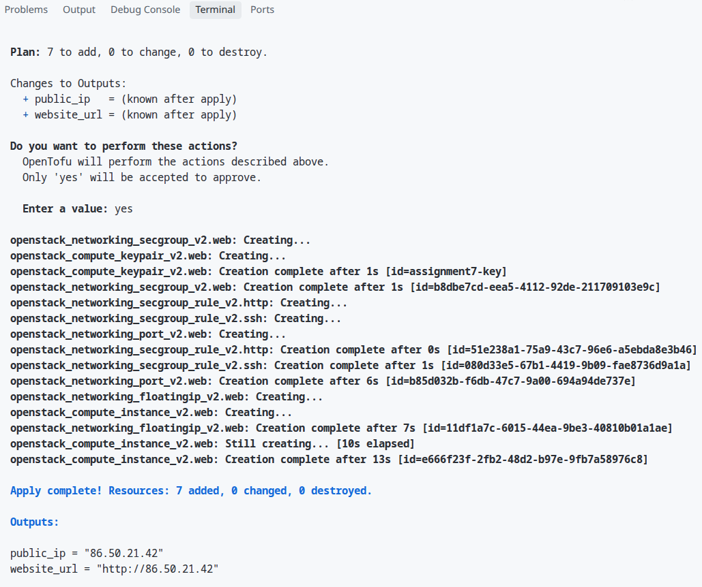
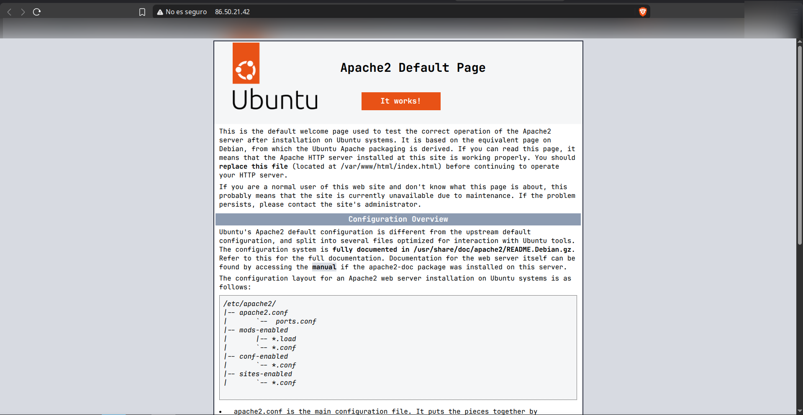
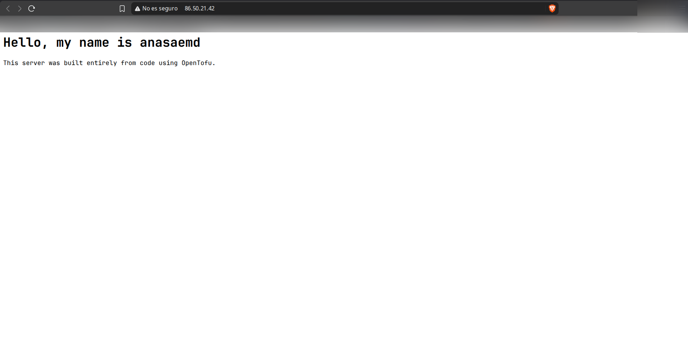
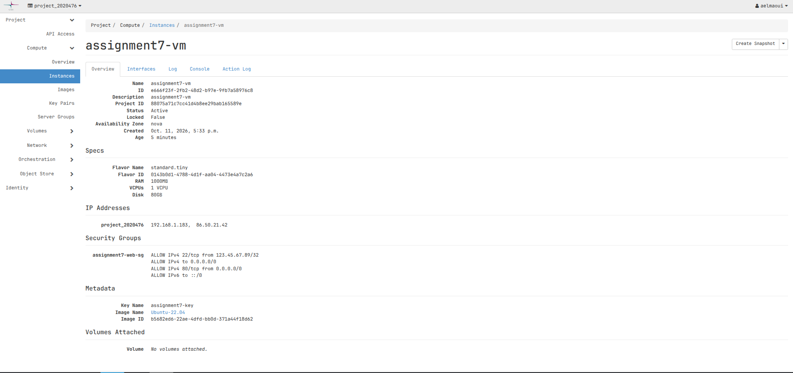
OpenTofu Experiments
✏ Experiment 1: Code Modifications (In-Place vs. Replacement)
Prediction
I modified two parts of the code:
-
Updated the security group description in
main.tf. Prediction: Updated in-place (no VM recreation needed because OpenStack allows metadata updates directly). -
Updated the
page_messagevariable invariables.tf. Prediction: Requires VM replacement (destruction and recreation) becauseuser_data/cloud-initscripts are executed only once during the initial instance boot phase.
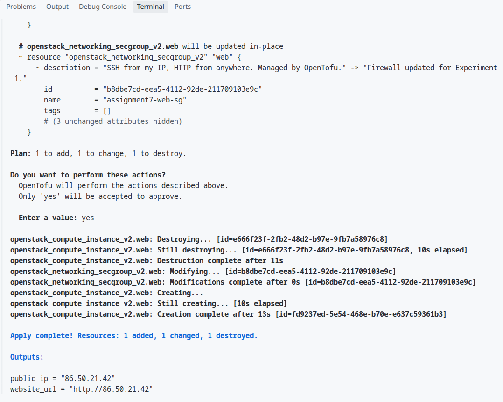
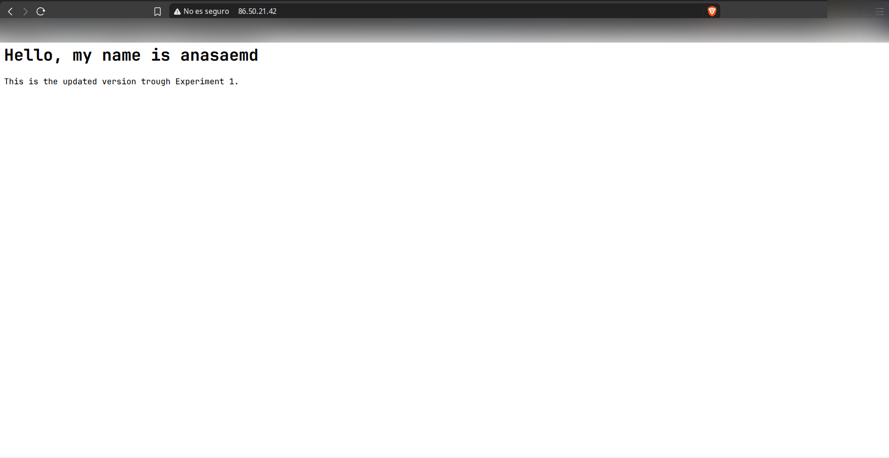
Explanation
OpenTofu distinguishes between mutable parameters (like firewall
descriptions) that can be changed via API calls without interrupting running
services, and immutable parameters (like
user_data
initialization scripts) that cannot be altered after a virtual machine has
been provisioned. To apply the new
user_data
, OpenTofu destroyed the existing instance and created a new one.
🌀 Experiment 2: Configuration Drift
Prediction
I manually modified the security group description in the CSC cPouta web
console to
"Updated manually from the web console."
.
Prediction:
Running
tofu plan
will detect this manual change (configuration drift) by comparing real-world
infrastructure against the local state file and will propose updating the
firewall back to match the code in
main.tf
.

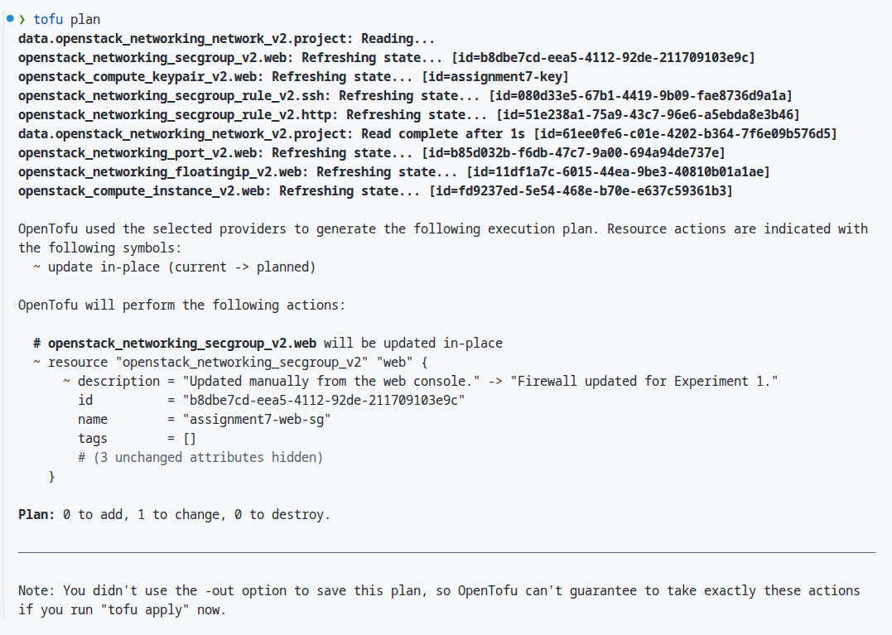
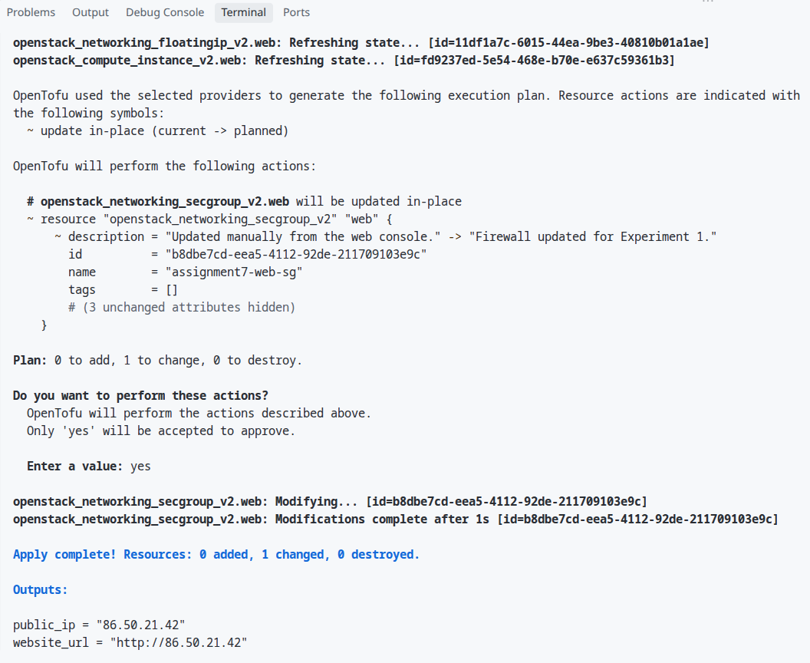
Explanation
When
tofu plan
runs, OpenTofu queries the OpenStack API to refresh the actual live state of
the cloud resources and compares it against the declared state in
main.tf
. Because the code is the single source of truth, OpenTofu detected that the
live security group description differed from the code and generated an
execution plan to overwrite the manual console change, returning the
firewall back to code specification.
🔁 Experiment 3: Destroy and Rebuild
Prediction
Destruction Prediction:
Running
tofu destroy
will dismantle resources in reverse order of their dependency graph (VM
instance and Floating IP first, followed by network port, firewall rules,
security group, and SSH key pair).
Rebuild Prediction:
Running
tofu apply
again will rebuild the entire working web server environment from scratch
automatically without any manual intervention.
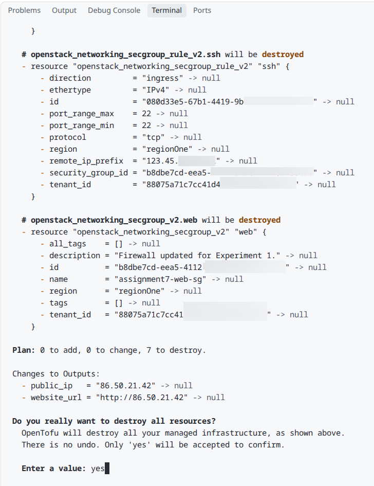
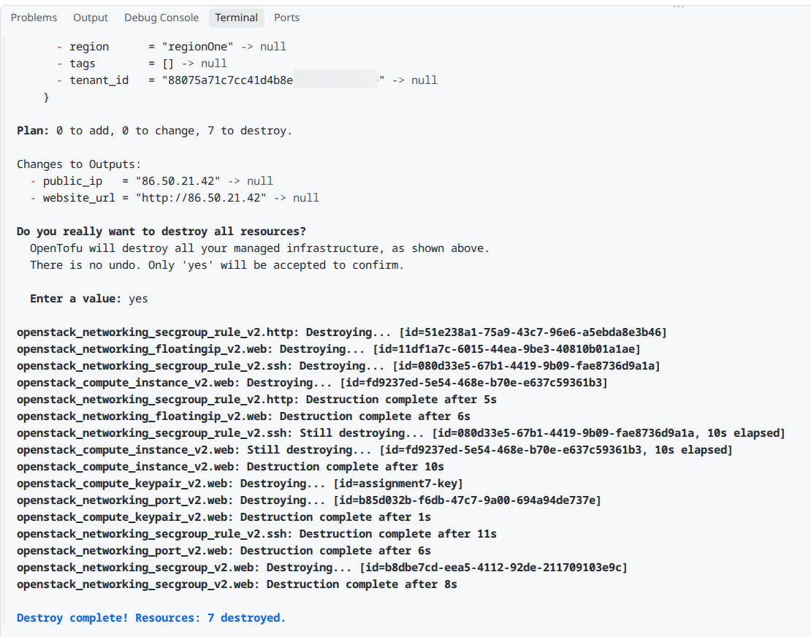
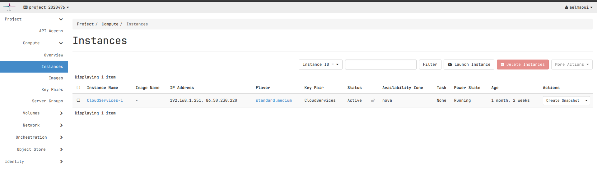
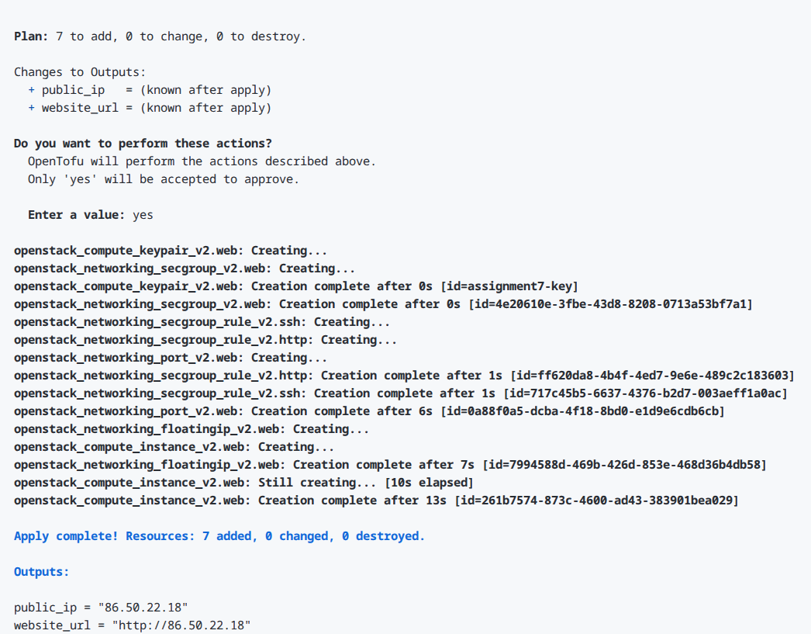
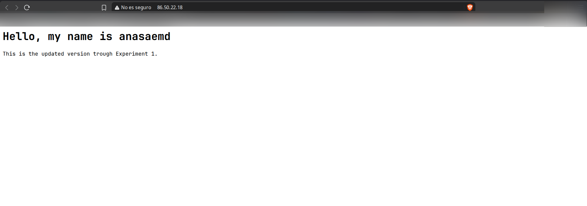
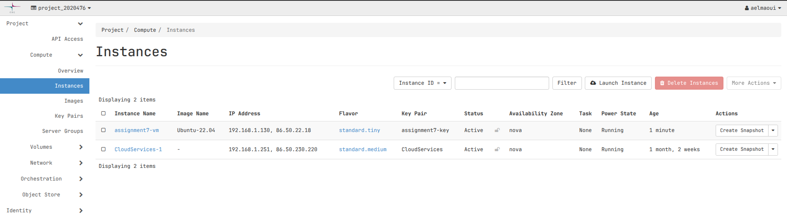
Explanation
OpenTofu manages resources using a directed acyclic graph (DAG) of
dependencies. During
tofu destroy
, dependent resources (like instances and floating IPs attached to network
ports) are deleted before the underlying network ports or security groups
can be safely removed. Upon running
tofu apply
, OpenTofu recreated the exact environment from code, demonstrating complete
infrastructure repeatability.
Reflection & Comparison
Comparing manual VM setup (Week 1) with Infrastructure as Code (Week 7):
- Effort & Speed: In Week 1, manually creating the VM, setting up security rules, assigning IPs, logging in over SSH, and configuring Apache required over 15 minutes of manual labor. In Week 7, writing the code took initial thought, but deploying and rebuilding the entire setup took less than 30 seconds with a single command.
- Repeatability & Reliability: Manual setups are hard to document perfectly and vulnerable to human error. IaC allows identical infrastructure environments to be created reliably across testing, staging, and production.
- Security: Manual setups often lead to open firewall rules or misplaced SSH keys. IaC keeps security group rules strictly defined in code, validated, and version-controlled.
- When to use each: Manual setups are suitable for quick one-off testing or learning. IaC is essential for production cloud engineering, team collaboration, and scalable software systems.
Troubleshooting Log
Problem 1: Missing SSH Key Pair
Symptom:
tofu plan
failed with error
no file exists at "/home/anas/.ssh/id_rsa.pub"
.
Solution:
Generated a standard RSA SSH key pair locally using
ssh-keygen -t rsa -b 4096 -f ~/.ssh/id_rsa
.
Problem 2: OpenStack Authentication Session Expiration
Symptom:
OpenTofu commands returned
Error creating OpenStack networking client: Authentication failed
.
Solution:
Re-loaded the OpenStack environment variables into the active terminal session
using
source project_2020476-openrc.sh
and entered the cPouta account password.